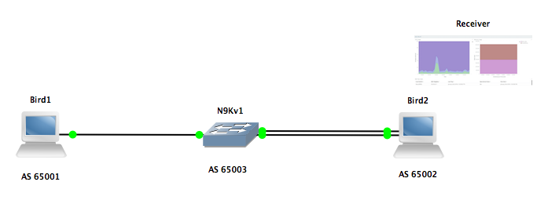
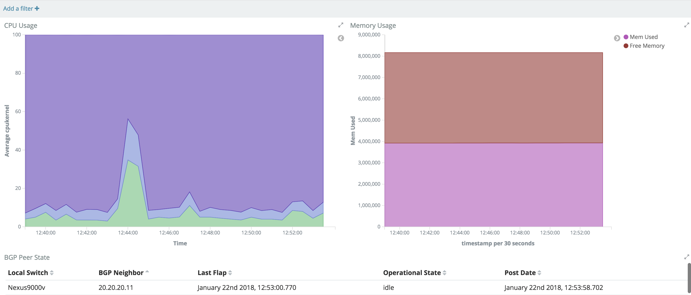

To begin with, we will review the topology.

There are 3 different VMs. 1 N9Kv, which is our virtual N9K, and 2 other Linux VMs, with which the N9Kv will peer. All IP addresses and BGP configuration is already in place. In this situation, our N9K will be streaming data to Bird2, where our receiver, ElasticSearch database as well as Kibana are running.
On bird1, the BGP neighborship will stay up once it is established. We will still see the updates with the current state, being streamed off box every 30 seconds.
On bird2 there is a script flapping the BGP process every minute. We will then see this changed state being updated on our dashboard every 30 seconds.
Please open the terminal app, and open an additional tab. In both tabs, please enter the following command cd workspace/DevNet-2899
We will firstly connect to the server to which the data is being sent, to start the receiver as well as give it the desired configuration and parser.
vagrant ssh bird2We will now become sudo.
vagrant@bird2:~$ sudo su
root@bird2:/home/vagrant#Next we will change directory into pipeline_12_08_17
root@bird2:/home/vagrant# ls
flappy_bird.sh pipeline_12_08_17
root@bird2:/home/vagrant# cd pipeline_12_08_17/
root@bird2:/home/vagrant/pipeline_12_08_17#
Here there are multiple files, but the 3 most relevant are the nexus-pipeline.bin binary file, the configuration file as well as the parser.
This is just a snippet of the configuration file for our receiver. In this instance, the receiver is sending the data to ElasticSearch, which listening is on port 9200 on the same server, ie localhost. This could be sent to any DB on the network once it has network connectivity.
<snippet>
[gRPCDialout]
#
stage = xport_input
#
# grpc: in the role of server with router connecting to pipeline and
# client side streaming.
#
type = grpc
#
# Encapsulation pushed by client: gpb, gpbkv, gpbcompact.
# As of 6.1.1 release, we support gpb (which is a common
# header used to carry compact and k/v gpb), and we default
# to gpb.
encap = gpb
#
# Socket to listen on
#
listen = :50001
#
<snippet>
.
.
.
<snippet>
#Config options for elastic is currently
#
# elastic server
#############################elastic = http://elastic.example.com:8086
elastic = http://localhost:9200/
#
# Database to populate, currently static (might be templatised in the future).
# Expectation is that database exists and user has read/write access.
# database = dbname
#database = telemetry
#
<snippet>
Next we will look at the parser file. The parser file can be used to rename the attributes, transform data from one type to another.
Here is a snippet for the command show system resources. In a furter section, you will see how this is tied to the telemetry configuration the switch.
In this situation, the encoding path is the source as specified in the GPB payload.
The index we are going to use is lan_resources_stats_ and we will create a new index in ElasticSearch daily. This is a method of optimizing data retrieval.
The index_type can be adjusted as required, to be weekly, hourly or whatever fits your requirements.
Here we are transforming data from the gpb_name, and gpb_type that are being received into a format that best suits our needs. As an example here, memory_usage_total is renamed memorytotal, and the type is transformed from a string to a float, so we could potentially performed calculations with it.
{
"encodingpath":"show system resources",
"function" :
{
"name" : "processGeneric",
"index": {
"index_prefix" : "lan_resources_stats_",
"index_type" : "daily"
},
"members": [
{"gpb_name": "memory_usage_total", "gpb_type": "string", "db_name": "memorytotal", "db_type": "float"},
{"gpb_name": "memory_usage_free", "gpb_type": "string", "db_name": "memoryfree", "db_type": "float"},
{"gpb_name": "memory_usage_used", "gpb_type": "string", "db_name": "memoryused", "db_type": "float"},
{"gpb_name": "cpu_state_kernel", "gpb_type": "string", "db_name": "cpukernel", "db_type": "float"},
{"gpb_name": "cpu_state_user", "gpb_type": "string", "db_name": "cpuuser", "db_type": "float"},
{"gpb_name": "cpu_state_idle", "gpb_type": "string", "db_name": "cpuidle", "db_type": "float"},
{"gpb_name": "Timestamp", "gpb_type": "string", "db_name": "timestamp", "db_type": "string"},
{"gpb_name": "node_id", "gpb_type": "string", "db_name": "swname", "db_type": "string"}
]
}
}Given that we have now reviewed the configuration file as well as the parser for our receiver, we will now start the UTR.
./nexus-pipeline.bin --config pipeline.conf --parser parser.json &Now we will connect to our N9Kv. In the second terminal tab, we use vagrant ssh to connect to n9kv1.
$ vagrant ssh n9kv1
Password:The password is vagrant
Next we want to check that the switch is in the desired state, from an operational standpoint.
Firstly we want to check the LLDP neighbor state.
Nexus9000v# show lldp neighbors
Capability codes:
(R) Router, (B) Bridge, (T) Telephone, (C) DOCSIS Cable Device
(W) WLAN Access Point, (P) Repeater, (S) Station, (O) Other
Device ID Local Intf Hold-time Capability Port ID
bird1 Eth1/1 120 S 0800.2752.028f
bird2 Eth1/2 120 S 0800.2758.bc48
bird2 Eth1/3 120 S 0800.27e1.36a9
Total entries displayed: 3
Nexus9000v#
If you do not see 2 LLDP neighbors over 3 links, Eth1/1-3, please let Shashi know. We will soon incorporate this into our telemetry solution.
Next, we want to check the BGP state.
Nexus9000v# show bgp sessions
Total peers 2, established peers 2
ASN 65003
VRF default, local ASN 65003
peers 2, established peers 2, local router-id 30.30.30.12
State: I-Idle, A-Active, O-Open, E-Established, C-Closing, S-Shutdown
Neighbor ASN Flaps LastUpDn|LastRead|LastWrit St Port(L/R) Notif(S/R)
10.10.10.11 65001 0 00:06:16|00:00:05|00:00:42 E 17489/179 0/0
20.20.20.11 65002 3 00:00:42|00:00:42|00:00:41 E 179/44278 0/3
Nexus9000v#
As we can now see, the BGP neighbors have come up. If BGP neighbor 20.20.20.11 is in a state other than 'Established' but the 'Flaps' count is greater than 0, that is ok too. As mentioned previously, there is a script changing the state of BGP on bird2 every minute.
These are relevant items that we want to monitor, on an ongoing basis. This is where we will now use NX-OS telemetry.
Firstly we enter enable the feature to start the telemetry process. feature telemetry
Nexus9000v(config)# feature telemetryThis starts the process, but it doesn't yet know what data to collect or where to send the telemetry data.
Nexus9000v# sh telemetry transport
Session Id IP Address Port Encoding Transport Status
--------------------------------------------------------------------------------
Nexus9000v#
On the NX-OS SW streaming telemetry solution, there are 2 datasources available. We have a default data source of DME, and a second data source called NX-API.
Here today we will pull data from both sources. We will get BGP state from DME, and system resources and LLDP data from NX-API.
Firstly we will configure where NX-OS should send the data, by default it is sent in the management VRF, but it can be configured to operate in any VRF available.
In this workshop we will send the data in the default VRF, to an IP of 30.30.30.11. The receiver will be listening on this IP on port 50001. The encoding will be GPB and the protocol will be gRPC.
telemetry
destination-profile
use-vrf default
destination-group 1
ip address 30.30.30.11 port 50001 protocol gRPC encoding GPBHow that this is configured the destination and encodin/transport, we will next add what data to send. As previously highlighted, there are 2 data sources, the default DME and NX-API. The concept of a sensor group can be considered a grouping of common data points that you would want in a similar timeframe. eg you may want interfacce statistics every 20-30 seconds, but powersupply and fan info every 2-3 minutes.
At this stage we will gather system resources from the data-source of NXAPI
sensor-group 1
data-source NX-API
path "show system resources" depth 0In the next section we are going to gather BGP state from DME. Here we are defining 4 different DNs, to gather BGP data.
We are working on a solution to simplify this configuration, for the most common elements that people are looking to gather. eg Environmental data, Interface statistics, BGP state information etc
sensor-group 2
path sys/bgp depth 0
path sys/bgp/inst depth 0
path sys/bgp/inst/dom-default/peer-[10.10.10.11]/ent-[10.10.10.11] depth 0
path sys/bgp/inst/dom-default/peer-[20.20.20.11]/ent-[20.20.20.11] depth 0The next step is to pair a sensor-group with a destination group. In this situation we are sending both sensor-groups to the same destination, but this can be configured to to separate destination groups and cadences if required.
subscription 1
dst-grp 1
snsr-grp 1 sample-interval 30000
snsr-grp 2 sample-interval 30000Now that the telemetry receiver has been started and our N9Kv is sending data, we will confirm that the connection has been established.
Nexus9000v# sh telemetry transport Session Id IP Address Port Encoding Transport Status -------------------------------------------------------------------------------- 0 30.30.30.11 50001 GPB gRPC Connected Nexus9000v#
Now please go to the following link, where we will now see the visualizations. http://localhost:5601/

We have now seen the various step required, but we now want to gather additional operational state. We will add LLDP information to our telemetry dashboard and show how that can be filtered and transformed as part of telemetry.
Now let us add some additional data to be sent as part of Nexus telemetry.
We will now add LLDP neighbor information to the configuration as part the existing sensor-group 1.
sensor-group 1
path "show lldp neighbors detail" depth 0We will next ensure that it has been added correctly to our configuration.
Nexus9000v# sh run telemetry | sec 'sensor-group 1'
sensor-group 1
data-source NX-API
path "show lldp neighbors detail" depth 0
path "show system resources" depth 0
Nexus9000v#show lldp neighbor detail has quite a bit of information. We will now see how we can filter and transform the data, as well as create an index specific for this new data. This is a more efficent use of our DB.
A second parser file called lldp_parser.json, that has already been designed to transform and filter the data.
root@bird2:/home/vagrant/pipeline_12_08_17# ls | grep parser
lldp_parser.json
parser.jsonWe will now do a diff between the 2 parser, so we can highlght what has been added to the 2nd parser.
root@bird2:/home/vagrant/pipeline_12_08_17# diff -c parser.json lldp_parser.json
*** parser.json 2018-01-26 00:31:24.894583458 +0000
--- lldp_parser.json 2018-01-26 00:29:46.344925270 +0000
***************
*** 29,34 ****
--- 29,53 ----
}
},
{
+ "encodingpath":"show lldp neighbors detail",
+ "function" :
+ {
+ "name" : "processGeneric",
+ "index": {
+ "index_prefix" : "lan_lldp_neighbors_detail_",
+ "index_type" : "daily"
+ },
+ "members": [
+ {"gpb_name": "port_desc", "gpb_type": "string", "db_name": "neighbor_port", "db_type": "string"},
+ {"gpb_name": "l_port_id", "gpb_type": "string", "db_name": "local_port", "db_type": "string"},
+ {"gpb_name": "sys_name", "gpb_type": "string", "db_name": "neighbor_name", "db_type": "string"},
+ {"gpb_name": "enabled_capability", "gpb_type": "string", "db_name": "enabled_capability", "db_type": "string"},
+ {"gpb_name": "Timestamp", "gpb_type": "long", "db_name": "timestamp", "db_type": "string"},
+ {"gpb_name": "node_id", "gpb_type": "string", "db_name": "swname", "db_type": "string"}
+ ]
+ }
+ },
+ {
"encodingpath":"show processes memory",
"function" :
{
root@bird2:/home/vagrant/pipeline_12_08_17#We will now stop the existing receiver and restart it with the new parser file.
To stop this process we need to first find what the process ID is by entering ps -a
root@bird2:/home/vagrant/pipeline_12_08_17# ps -a
PID TTY TIME CMD
3220 pts/0 00:00:00 sudo
3221 pts/0 00:00:00 su
3222 pts/0 00:00:00 bash
xxxx pts/0 00:00:00 nexus-pipeline.
3634 pts/0 00:00:00 ps
root@bird2:/home/vagrant/pipeline_12_08_17#
Once we have found the specific process ID that is associated with our nexus-pipeline we will kill thta process. kill -9 xxxx
root@bird2:/home/vagrant/pipeline_12_08_17# kill -9 3568
root@bird2:/home/vagrant/pipeline_12_08_17#
[1]+ Killed ./nexus-pipeline.bin --config pipeline.conf --parser parser.json
root@bird2:/home/vagrant/pipeline_12_08_17#We will now restart the process with the new lldp_parser.json file.
./nexus-pipeline.bin --config pipeline.conf --parser lldp_parser.json &Once we have restarted the recevier, we will then navigate to our browser, to see how this new data has been incorporated into our database as well as onto our dashboard.
To now highlight the speed with which telemetry data can be displayed on a dashboard, we will now, create an event that spikes the CPU utilization.
In terminal, please go to the tab on for N9Kv1, and enter the following commands.
Please enter the bash sheel on out n9kv1.
Nexus9000v# run bashPlease become sudo user here also.
bash-4.2$ sudo su
We will now create a spike in CPU utilization.
bash-4.2# dd if=/dev/zero of=/dev/nullOnce this has been entered, please then navigate back to the browser, to see this data being visualized in near real time on the dashboard.